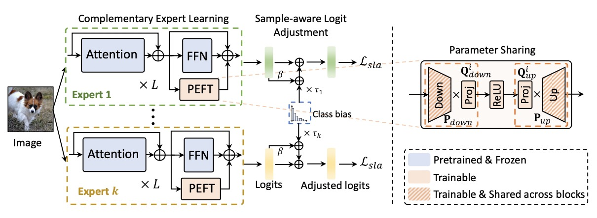
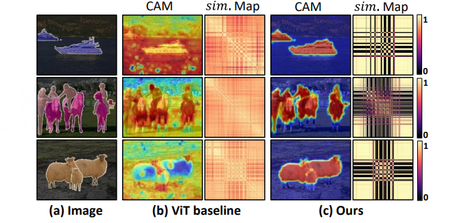
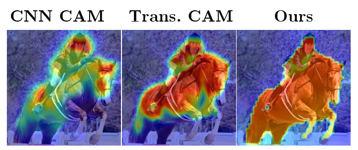
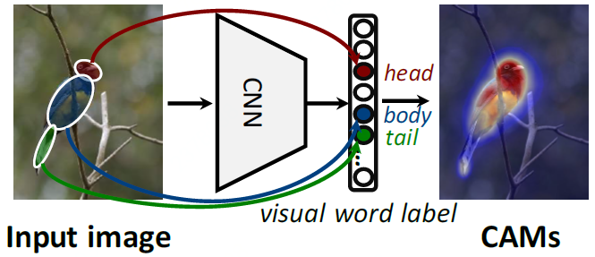
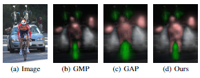
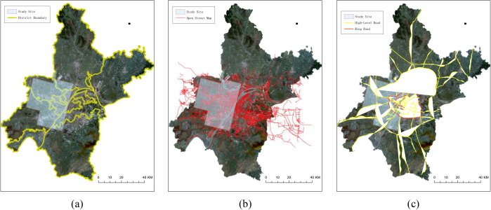
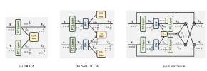
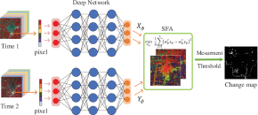

Lixiang RuPh.DSchool of Computer Science, Wuhan University.
|
😅
|
Biography
I'm currently a computer vision researcher at Ant Group. I received my Ph.D degree from the School of Computer Science, Wuhan University, in 2023. Before that, I received my Bachelor's degree from School of Cyber Science and Engineering, Wuhan University.
My research interests include semantic segmentation, weakly-supervised semantic segmentation, self-supervised learning and other visual understanding problems.
Education
- School of Cyber Science and Engineering, Wuhan University. B.Sc in Information Security,

2014.09 - 2018.06.
Work Experience
- Ant Group, Senior Algorithm Engineer,
- JD Explore Academy , Research Intern,
2023.07 - Now.
2021.03 - 2022.11.
Publications
|  |
Parameter-Efficient Complementary Expert Learning for Long-Tailed Visual Recognition
Lixiang Ru, Xin Guo, Lei Yu, Yingying Zhang, Jiangwei Lao, Jian Wang, Jingdong Chen, Yansheng Li, Ming Yang ACM Multimedia 2024 (ACM MM), 2024. [Paper] |
|  |
Token Contrast for Weakly-Supervised Semantic
Segmentation
Lixiang Ru, Heliang Zheng, Yibing Zhan, Bo Du IEEE Conference on Computer Vision and Pattern Recognition (CVPR), 2023. [Paper][Code][Poster] |
|  |
Learning Affinity from Attention: End-to-End
Weakly-Supervised Semantic Segmentation with Transformers
Lixiang Ru, Yibing Zhan, Baosheng Yu, Bo Du IEEE Conference on Computer Vision and Pattern Recognition (CVPR), 2022. [Paper][Code][Poster][Project] |
|  |
Weakly-Supervised Semantic Segmentation with Visual Words
Learning and Hybrid
Pooling
Lixiang Ru, Bo Du, Yibing Zhan, Chen Wu International Journal of Computer Vision (IJCV), 2022. [Paper][Code] |
|  |
Learning Visual Words for Weakly-Supervised
Semantic Segmentation
Lixiang Ru, Bo Du, Chen Wu International Joint Conference on Artificial Intelligence (IJCAI), 2021. [Paper][Code] [Slide] [Poster] |
|  |
An Investigation of
Traffic Density Changes inside Wuhan during the COVID-19 Epidemic with GF-2 Time-Series
Images
Chen Wu, Yinong Guo, Haonan Guo, Jingwen Yuan, Lixiang Ru, Hongruixuan Chen, Bo Du, Liangpei Zhang International Journal of Applied Earth Observation and Geoinformation, 2021. [Paper] |
|  |
Multi-Temporal Scene Classification and
Scene Change
Detection with Correlation based Fusion
Lixiang Ru, Bo Du, Chen Wu, IEEE Transactions on Image Processing (TIP), 2020. [Paper] [Code] [Dataset] |
|  |
Unsupervised Deep Slow Feature
Analysis for Change Detection in Multi-Temporal Remote Sensing Images
Bo Du, Lixiang Ru, Chen Wu, Liangpei Zhang, IEEE Transactions on Geoscience and Remote Sensing (TGRS), 2019. [Paper] [Code] |
Honors & Awards
- 2023.04 Outstanding Graduate Student; Wuhan University;
- 2022.10 National Scholarship; Wuhan University;
- 2022.10 Outstanding Student Scholarship; Wuhan University;
- 2022.05 Second Prize of Doctoral Forum; School of Computer Science, Wuhan University;
- 2021.11 National Scholarship; Wuhan University;
- 2021.11 Outstanding Student Scholarship; Wuhan University;
- 2020.11 Yisheng Scholarship; Wuhan University;
- 2020.04 IEEE GRSS Transactions Prize Paper Award; IEEE GRSS Society;
- 2019.11 Outstanding Student Scholarship; Wuhan University;
- 2016.10 Outstanding Student Scholarship; Wuhan University;
- 2016.10 National Encouragement Scholarship; Wuhan University;
- 2015.10 Outstanding Student Scholarship; Wuhan University;
- 2015.10 National Encouragement Scholarship; Wuhan University;
Academic Service
- Journal Reviewer: TPAMI, IJCV, TIP, TNNLS, TMM, TCSVT, TGRS, TAI, PR, Neurocomputing, ...
- Conference Reviewer: CVPR, ICCV, ECCV, ACCV, ...